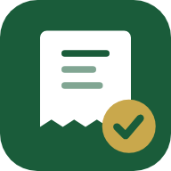

Bill Tracker and Subscription Tracker App — no subscription, works offline
PayLog is a bill tracker and subscription tracker for people who want to see what they pay each month and never miss a due date. Add rent, electricity, internet and every service that bills you again and again, and keep the whole picture on one screen.
Get it on EtsyOne-time purchase. No subscription.
What it does
- Add bills with a due day (shorter months use the last day) and an amount; an estimate is fine for bills that change.
- Add subscriptions and start from a popular service with its details filled in, then check the price and save.
- Free-trial alerts show when a trial ends so you can cancel before you are charged.
- Zombie Hunt lists subscriptions you have paid for a long time and probably do not use, based on a last-used date you set.
- Payment calendar with Paid, Upcoming, Overdue and Trial ends states for each day.
- Reports: monthly total, yearly projection, cost by category and a comparison with last month.
- A "What if I cancel?" calculator shows how much you would save by cancelling the subscriptions you tick.
- Cancel a subscription and keep it in your history, so it stops counting toward your monthly total.
- Print a payment summary or a subscription list, or share a payment reminder or summary by WhatsApp or SMS.
How it works
- You buy it once on Etsy and download the file in a web browser (the Etsy phone app cannot download digital files).
- On a computer, you open the app file in your browser. On a phone, you open the app's web address in Safari (iPhone) or Chrome (Android) and choose Add to Home Screen (Android: Install app).
- Your data stays on your device. There is no account and no subscription.
- After the first load it works without internet.
- Languages: English, Spanish, French, German and Turkish.
What it does not do
- No bank connection: you enter bills and payments yourself.
- No cloud sync between devices. Each device keeps its own data; move it with the backup file.
- No automatic payments and no automatic messages; it does not pay or cancel anything for you.
- No team or shared accounts.
Questions
Is PayLog a subscription?
No. It is a one-time purchase on Etsy. There is no monthly fee, no account and no renewal.
Does it connect to my bank?
No. You type in your bills and subscriptions. Nothing is read from your bank, and your records stay on your device.
How does the free-trial alert work?
Mark a subscription as a free trial and enter the end date. The dashboard and calendar show when it ends. Nothing is sent by itself, so check the dashboard.
Does this bill tracker work offline?
Yes. After the first load it works with no internet, on the phone and on the computer.
Can I use it on my phone and my computer?
Yes. It is the same app on both. Each keeps its own data, and you can move it with backup and restore.